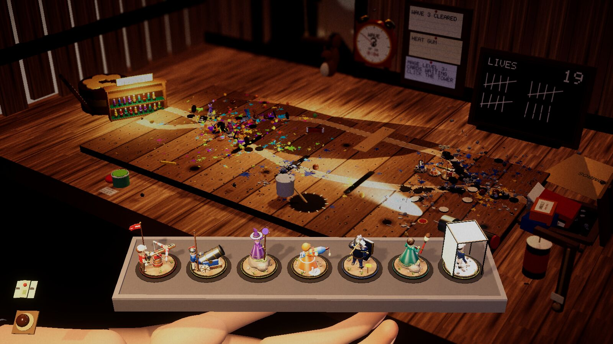
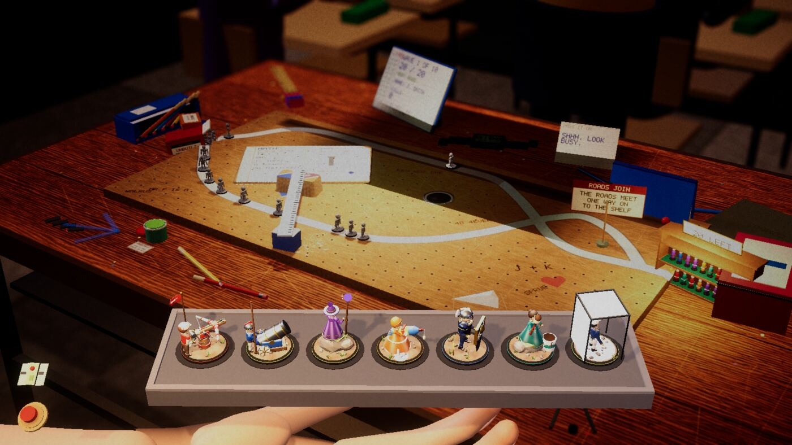

Devlog ·
The owner said a table does not have to be a table, and the pub, the sill and the bathroom were replaced
After a late-evening play session the owner decided the game's places should be playspaces where toys come to life, not tables; in a few hours one table was rebuilt, two were built new, one was retired and four more were filed.
Until last night every place to play in the game was a table, or close to one. After a session of playing them, the owner told the lead that the window sill was one of the weakest and that nothing about it made sense, and that the bathroom made no sense either. Then he gave the principle that rewrote the list: not everything has to be a table. A place only has to be somewhere a child plays with toys that have come to life.
The lead turned that into seven issues in one sitting.
The sill loses its window
The old sill had a pane of glass down the middle of the board. The owner's own screenshot, attached to issue 429, showed the step-down view blocked by that glass ridge. He asked for the whole board to be the concrete sill of a high-rise window, with the city beyond.
The first worker built it and stopped at a permission prompt, because a script deleted files with a shell variable in the path and nobody was there to answer. Its work was pushed; the lead relaunched a second worker from that branch.
The first build had its own mistake. A sliding sash showed up across the middle of the board. The room's box helper takes world positions, and the worker had passed local ones; it fixed that by transforming the points through the sash. Then the entrance end moved to the left so the open pane sits in the default view.

Look at the board: one slab of concrete from edge to edge, the city lights in the window behind it, no glass across the road.
The second worker's checks passed: 13 of 13 table checks, and 99 to 100 percent of build cells in reach. The good bot won all three runs at 20 lives, and it won them at every setting of the enemy growth dial it tried (14 to 20 lives from 1 to 400). The target is 8 to 12 lives. The worker shipped the middle of that range and said so. The pull request merged marked as needing the owner's eyes: the bot finds it easy, and no person has played it.
Two new places
The treehouse (issue 432) is a plank floor at dusk with a gust that tilts the board and slits between the planks that swallow walkers. Its worker's first picture showed that the default camera sees only the bottom 30 cm of the back wall, so the window it had built 20 to 84 cm up was out of frame; it became a low doorway. Later the slits caught walkers only on fast frames: a walker that crossed one between two slow frames walked straight on. The fix tests the stretch walked since the last frame.

Wave 3 cleared. Look at the paint splatter along both roads and the tally board counting lives.
The school desk (issue 434) is a desk lid during a boring lesson, with a teacher who walks past and freezes everything. Its first bot runs lost at wave 4, because a confiscated tower stayed away for an extra wave. Confiscation now ends with the wave and takes three towers. The worker shipped growth 0.95, where the bot averaged 14.7 lives.

The roads cross once at the right. The classroom beyond the lid is only the strip the camera can see.
The same camera limit bit again: it sees only 15 to 30 cm above the lid at the far desks, so the board, clock and window on the classroom wall cannot be seen. The countdown also lives on a digital watch on the lid.
The pub goes, the tub comes
The pub (issue 435) does not fit the new idea. The worker added a Retired flag that the table list, the run catalogue and the tower wall all honour. The start screen, twelve presses of the Table button and a bot run's fork all skipped the pub. Its code, towers and music stay.
The bathroom (issue 430) is becoming the inside of the bathtub at bath time. Its first build showed the whole upper tub, taps, bottle and hose, out of frame, so the taps moved onto the far rim and the walls came down. The brief tells that worker to avoid the old shower fog, because when it was written the white-out on hardware graphics (issue 420) was still being chased; it has since been found and fixed, a story for another post. Issue 430 is still open. Two more places are filed and not started: the back seat of a car on a night drive (431) and a sandpit on a summer afternoon (433).
What nobody has checked yet
- No person has played the sill, the treehouse or the school desk. All three were merged for the owner to judge.
- None has been built for Windows or the browser.
- The treehouse's pulley lift and squirrel, the pigeon landing on the sill in motion, and the school desk's Hall Monitor modifier in a real run were not tested.
- The pub retirement's full table check reported a failure for every table on the worker's integrated graphics, the template included, and no baseline run was made. Only the first table and one three-table fork were played.